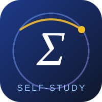

它不讲课、不给完整解析。它先诊断你卡在哪一层认知，再用追问、质疑和搭梯子，逼你自己走完 做题 → 懂题 → 讲题 → 举一反三 的四层闭环。终点不是听懂，是你脱离它也能讲清楚。
真题为母、结构性改编的探究题。不主动给提示，自己推到底。
不对答案，先扎本质：哪个条件必不可少？哪条定理的前提你没验？你默认了什么？
你主讲，它倾听。讲完再集中拷问前提与边界，陪你重写到严谨。
自己改条件、构变式、预判结论变化，讲清底层逻辑哪里被改。
学习 → 自学 → 归纳总结 → 自我输出 → 表达重构 → 理解 → 反思 → 迭代 → 聚焦深耕 → 抓本质 → 提问质疑 → 独立思考 → 求真